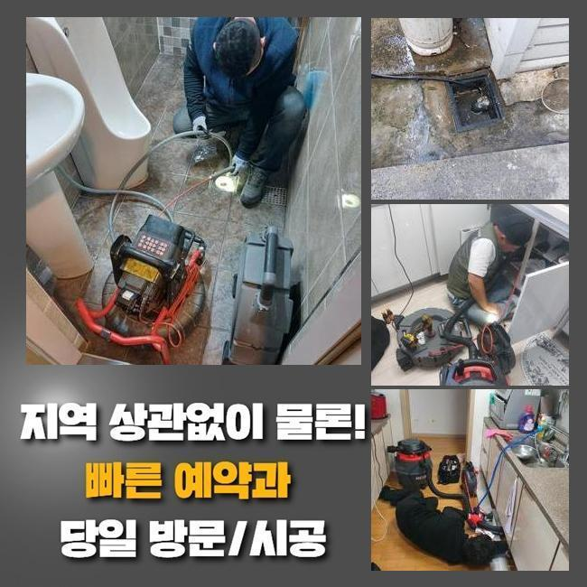
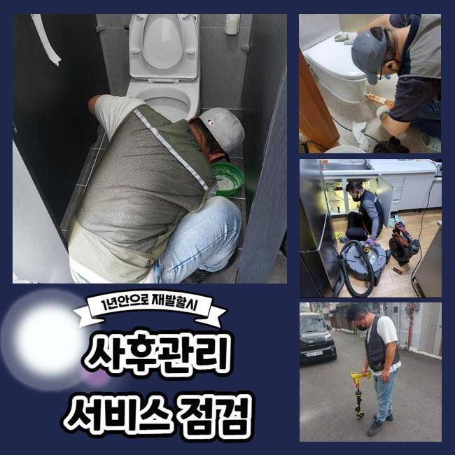
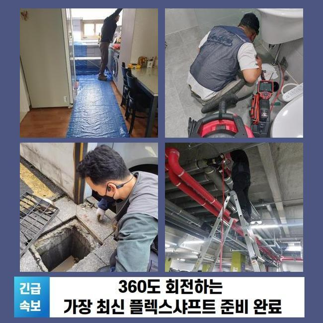
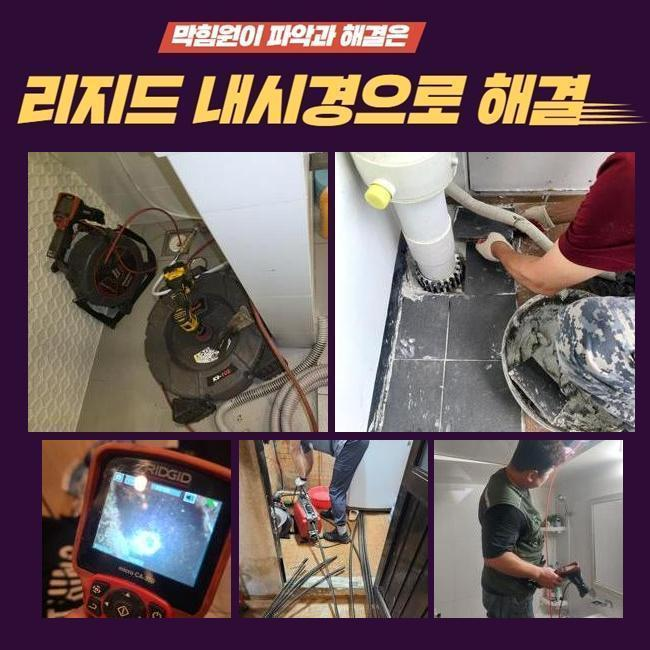
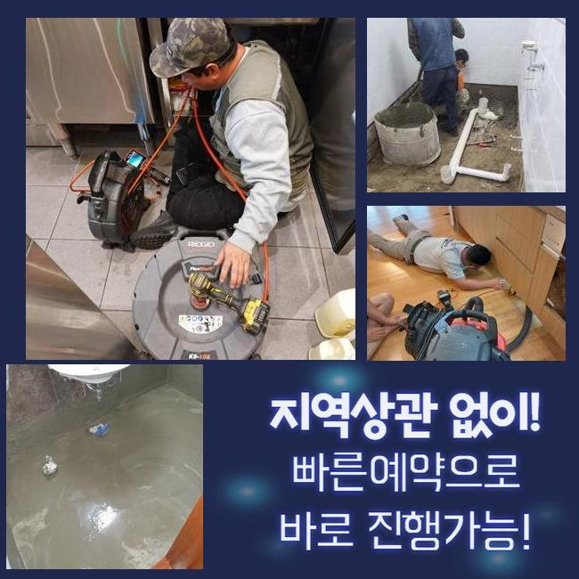
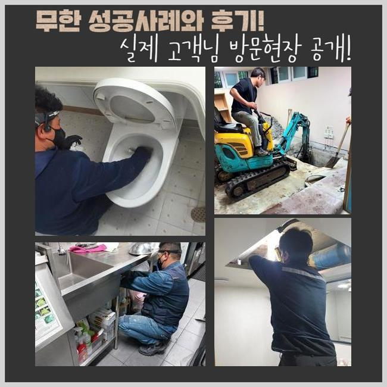

🏠 안양 박달동하수구뚫음 냄새차단 수리업체
안양 싱크대막힘 전문 시공 후기

📋 작업 개요
- 위치: 안양
- 서비스 유형: 싱크대막힘, 하수구막힘, 배관막힘, 역류해결, 뚫는업체, 배관청소, 고압세척, 악취차단
- 작업 일시: 2025. 1. 18. 10:19
- 업체명: 하수구수사대 (010-5615-2118)
🔍 문제 상황
안양 박달동하수구뚫음 냄새차단 수리업체
며칠전 오피스의 팬트리에서 발생된 통수오류를 해결해드린 사례를 안내해볼게요
따라하기 쉬우며 효율적인 방법들이 상당하니 꼼꼼히 살펴보셔도 좋습니다
탕비실이란 위치에서 생겨난 일이다 보니 나름의 개선책으로 뚫기위한 시도들이 눈에 띄었죠
전문가들은 작업방식들을 어떠한 절차로 수행하는지 또한 배관을 유지시키는 방안도 어렵지않게 안내할게요
고객분은 이용할때 음식물을 취급하는 현장이 아니므로 물이 안내려가는 불상사가 나타날줄은 꿈에도 몰랐다고 말하셨어요
이곳의 경우 식재료를 취급할 일이 없는 곳이기에 정기적인 관리책 수행이 결여된 사례가 대다수에요
저희전문진은 장치를 준비시켜 출동했죠 도착하여 하수관을 주시해보았죠
구석구석 확인하니 역류하고있던 모습은 보이지않았으나 답답하게 내려가고 있었어요
배수가 제대로 안되면 예기치못하게 고이게되고 역류해버리는 현상들이 생겨날 확률이 다분해요

🔎 원인 분석
💡 전문가 진단: 정밀 진단 장비를 사용하여 슬러지의 고착 여부를 판명하고 타격/세척 작업을 실시했습니다.
그리하여 석션기기라는 전문기계를 꺼내 잔존하는 하수들을 제거했는데요
석션기기의 경우 점검과정보다 먼저 선명한 송출을 위해서 사용되고 찌꺼기와 같은 잔재들을 제거할때 효율적인 기능들을 뽐내고 있어요
썩션통에 하수들이 담겨있었지만 하수관으로 더디게 흘렀죠
석션기기의 가용 이후엔 내시경카메라로 하수관을 확인했습니다
내시경 선을 투입하니 잔해물들이 떡하니 자리잡아 배수공간이 좁아지게 되었어요
요리들을 하지못하는 곳임에도 어떠한 원인으로 쌓이게된건가 생각할 수 있지만 사무공간에서는 정기적인 관리책 실시가 이뤄지지않는 경우들이 다수입니다
그렇기때문에 주전부리 및 커피에서 나오는 부산물 기름이 뒤엉켜 고착물을 만들어내요
내시경기기로 싱크대쪽을 체크해보면서 샤프트장치로 흡착물들을 타격하며 조금씩 하수관을 세척하니 공간들이 만들어지며 배수영역이 넓어졌어요
기름의 형상은 내시경에서 불그스름한 색을 띄므로 기름들이 없어지면 영상도 깔끔히 탈바꿈되는것을 보게됩니다
샤프트작업을 해주었지만 물이 하수관으로 느린속도로 내려가는 상태였어요
그렇기때문에 대량의 물들을 일시에 흐르게했더니 특정 구간에서 고인현상과 동시에 막혀버리는 트러블들이 존재했습니다

🔧 작업 과정
하수가 고임현상을 보이는건 여타 트리거들이 남아있단 시그널이에요
잔해를 비롯해 놓친 요소가 남아있단 걸 가르키기에 외측라인까지 확인할 필요성들이 분명했습니다
저희업체는 오랫동안 이어진 싱크대배수 정체의 까닭을 파헤치기위하여 내시경케이블을 엘보라인까지 넣어주었어요
끝내 알게된것은 배수관의 특정부분이 하단에 매립되어 있지 못하고 외측으로 빠져나와 설치된 상태라는 점이였죠
실내쪽에서 내시경장치로 진입시키기가 까다로워서 바깥에서부터 반대로 투입하게끔 특정부분을 뚫어내고 그 부위에 내시경 내시경 선을 밀어넣었습니다
내시경케이블을 넣어보니 재차 좁혀진 배수길을 발견했습니다
사무공간에서는 하수라인이 연결되질 못했으며 다른 배수관이 하단부로 빠지는 구조였죠
해당 지점을 넘어가니 세면대로 빠지는 위치에 형체를 알 수 없는 것이 하수도를 가로막아섰죠
싱크대쪽의 하수관이 아니라 뜻밖의 장소에 폐기물이 자리하고 있어 발견하기까지 오래걸렸으나 결국 만성적인 막히는 문제의 주된 연유를 찾아냈습니다
수회동안이나 지점들을 검수하고 이물제거가 필요한 포인트의 pvc 하수도를 자른 뒤에 잔해를 배출해냈는데요
제거시키니 모서리가 둥글었던 합성수지였는데 어떻게 빠지게된건지 파악이 안됐지만 크기도했고 배수관에 자리잡았을 때라면 배수가 불가한 것이 당연한 물체였어요
주방의 하수관과 문제들을 불러일으키는 플라스틱까지 청소해주는 수순을 완료하니 유수가 원활하게 되면서 수리들이 완료됐죠
최종적으로 의뢰인분은 악취들도 물으셨어요 작업 중에 체크해보았는데 냄새까지 생겨난걸 확인했죠
트랩부분에 균열들이 발견되었어요 배수관부터 정리하고 새것으로 교체도 오차없이 해드렸습니다
확인을 위해 탕비실쪽으로 가 씽크볼에 수돗물을 받고 배수과정을 지켜보니 처음관 다르게 이상없이 배출되었습니다
금일의 배수구막힘의 증상도 말끔하게 해결됐죠


✅ 작업 완료
다행스럽게도 끝끝내 문제의 까닭들을 추적하며 결국 막힌 연유를 발견했으며 시설물 이용도 가능하게되었어요
위같이 고객께서 사용하는 때에 고생하시지않게 배수정체 시정을 완료시켰습니다
이용해주실 때 개수대에 기름성분과 찌꺼기가 침투되지 못하게 주의해야하고 청소과정도 정기적으로 해주셔야 해요
저희의 전문가들은 재발위험이 제로인 시공에 집중합니다 이에 작업하면서 작업을 마치고서 청소해준 부분에서 또 같은 증세가 야기되면 무상정책으로 as까지 제공해드려요
배수정체로 인해 전문가 호출을 고려하는 중이시라면 저희의 전문가들에게 상담진행해보는건 좋은 선택이 될 것입니다!



⚠️ 주방 싱크대 배관 막힘 예방 수칙
- ✅ 기름기가 묻은 식기나 프라이팬은 설거지 전 키친타올로 반드시 기름때를 닦아내세요.
- ✅ 주기적으로 싱크대 개수대에 뜨거운 물을 가득 받아 한 번에 내려 배관 내부 기름을 씻어내세요.
- ✅ 배수구 거름망을 미세한 필터로 사용하시고 음식물 찌꺼기가 틈으로 새어 들지 않게 관리하세요.
- ✅ 베이킹소다와 식초를 뜨거운 물과 함께 일주일에 한 번씩 부어주면 배관 살균과 막힘 예방에 좋습니다.
💡 핵심 정리
- 확실한 장비 작업(내시경 점검 및 샤프트 스케일링)으로 원인을 뿌리 뽑습니다.
- 작업 후 1년 이내에 동일한 부위 재발 시 100% 무상 A/S 서비스를 보장합니다.
- 서울 · 경기 · 인천 전 지역에 24시간 언제든 긴급 출동할 수 있도록 항시 대기 중입니다.
❓ 자주 묻는 질문 (FAQ)
🚨 안양 싱크대막힘 문제로 고민이신가요?
정확한 원인 진단과 확실한 시공으로 재발 없는 해결을 약속드립니다.
24시간 긴급 출동 | 서울 · 경기 · 인천 전지역 | 1년 내 재발 시 무상 A/S